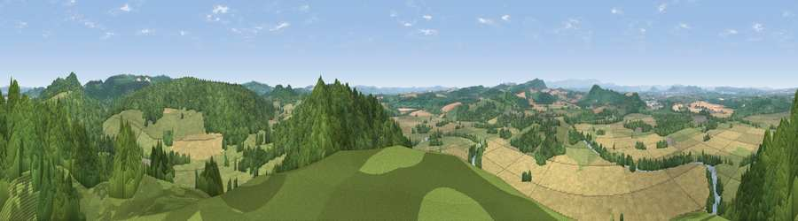

Viewpoint near Mordiford
#3215 in England · top 8% of its area beats it · near MordifordWhere it is
The exact computed spot (SO 57125 36425). Click the marker for map links.
The view, rendered

A 360° render of this exact spot computed from the terrain model, tree cover and land cover — summer colours, afternoon light, calibrated against photographs of famous viewpoints. Real trees, hedges and buildings will differ in detail.
The panorama
Grey silhouette: terrain skyline in each direction (720 bearings, Earth curvature and refraction included). Dashed green: skyline with trees (+15 m) and buildings (+8 m) as obstacles. Blue strip: how far the ground is visible on each bearing.
Where the view opens
Wedge length = distance to the farthest visible ground on that bearing (vegetation-aware). Rings at 10, 25 and 50 km.
What fills the view
42% woodland · 28% grassland · 27% cropland · 2% water ·
Angular shares of the visible panorama (visual magnitude), not map area. Landscape diversity 0.51 (0–1 Shannon).
Key numbers
More beautiful places nearby
The staircase of upgrades: each row has a higher view potential than everything closer. Driving times are estimates from straight-line distance, calibrated against real road routing — check an actual route before setting out.
| Place | Direction | Drive | Score |
|---|---|---|---|
| Viewpoint near Fownhope | SSE · 4 km | ~9 min | 76.0 |
| Seagar Hill | ENE · 5 km | ~11 min | 82.1 |
| Garway Hill | SW · 18 km | ~31 min | 84.6 |
| Millennium Hill | E · 19 km | ~33 min | 86.9 |
| Worcestershire Beacon | ENE · 22 km | ~36 min | 87.1 |
| Viewpoint near West Quantoxhead | SSW · 104 km | ~129 min | 87.9 |
| Viewpoint near West Quantoxhead | SSW · 105 km | ~129 min | 88.7 |
| Holdstone Hill | SW · 130 km | ~154 min | 90.2 |
52.02457, -2.62628 · source: screening · position refined by local search. Computed location — check access rights before visiting.